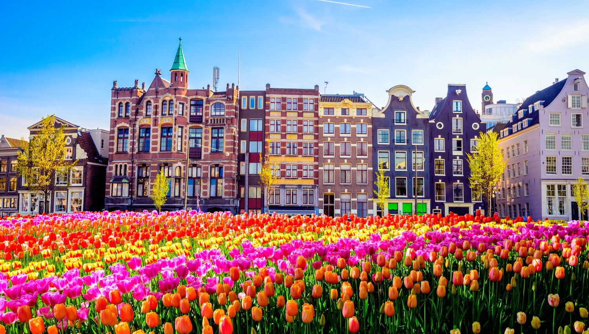

Take a private Netherlands tour and discover the land of windmills and water, bikes and dykes, with a friendly local guide.Your guide is eager to customize a private Netherlands tour that reflects your unique interests in his splendid homeland.
moreThe Netherlands packs great natural diversity into quite a small space, and national parks have been cropping up around the country since the 1930s.The parks are all community assets with visitor centres run by conservation organisations or the Dutch government.
moreThe Netherlands has had some pretty impressive castles throughout history. Many of these medieval castles have not survived,but luckily there are still some beautiful castles still worth visiting.
moreThe pancake-flat country is one of Europe’s favourite tourist destinations. What do you say about a trip where you can explore the cities on bike, enjoy fabolous food, hang out with super-friendly people and party until dawn both with locals and other Europeans? If something doesn’t exist, the Dutch will make it a reality. Therefore,pack your bags and catch a first flight for the Netherlands, the country where all your wishes will come true!
Best of all, because all distances are short in Holland, you can travel from one end of the country to the other in no time.From the vibrant university city of Groningen up north to Maastricht, a city for true bon-vivants in the south of Holland: everything is within easy reach.Where else can you relax in an ecolodge surrounded by nature, immerse yourself in the nightlife of the big city, and go for a fantastic bicycle ride through green polders and attractive villages in a single holiday? Holland has one of the world’s best railway networks with excellent connections to other European destinations. Traveling couldn’t be easier!
